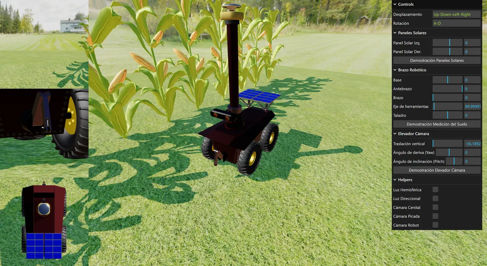
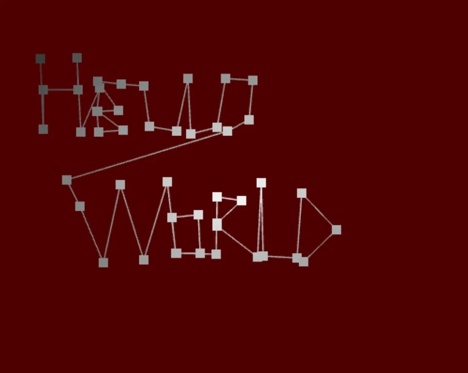
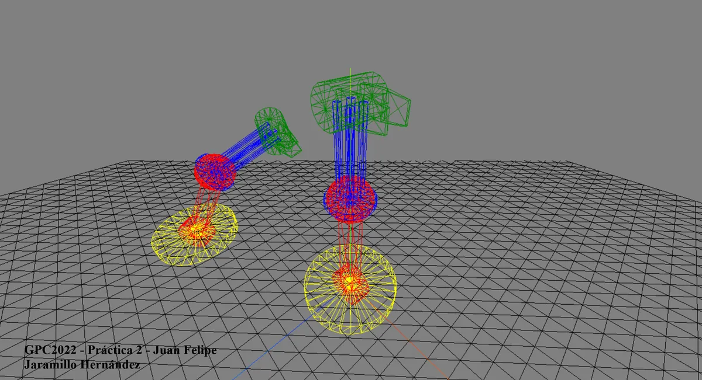
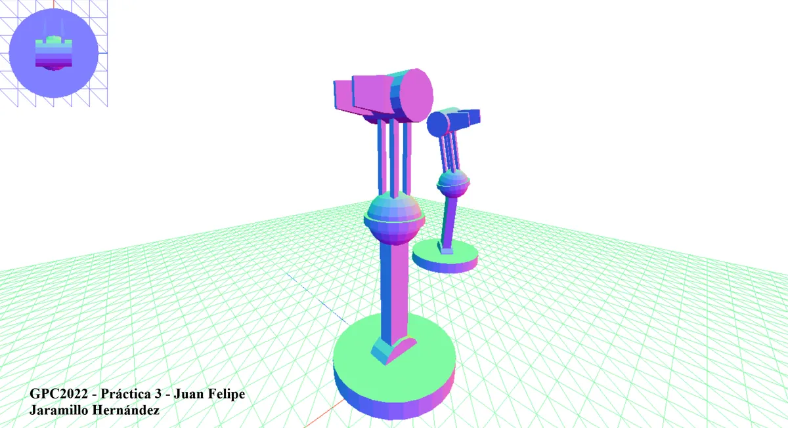
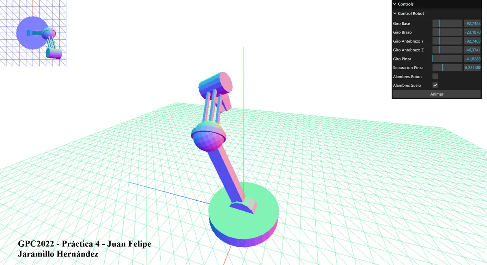
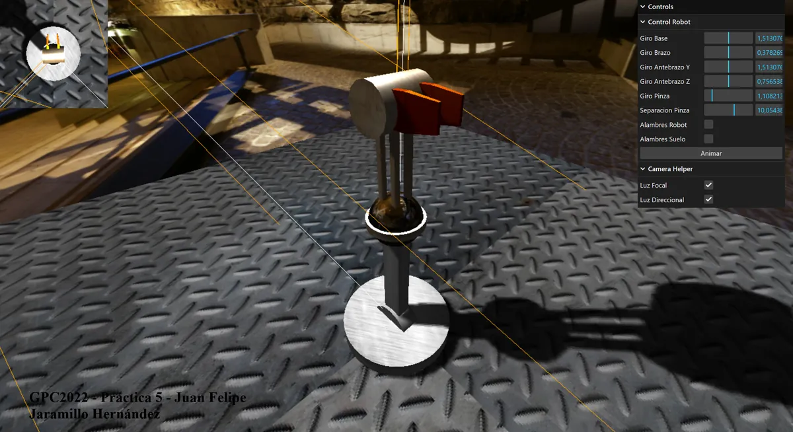

A set of computer-graphics applications written in three.js and WebGL — from a fully articulated robotic arm to FENOBOT, an autonomous phenotyping robot for precision agriculture.

An autonomous phenotyping robot modelled in real-time 3D — built to navigate crop rows and capture plant data for precision agriculture. The capstone of the course, bringing together geometry, articulation, materials and camera control into one scene.
An articulated arm, rebuilt five times — each iteration adding a new layer of the computer-graphics pipeline. Open any step to see it run live.




